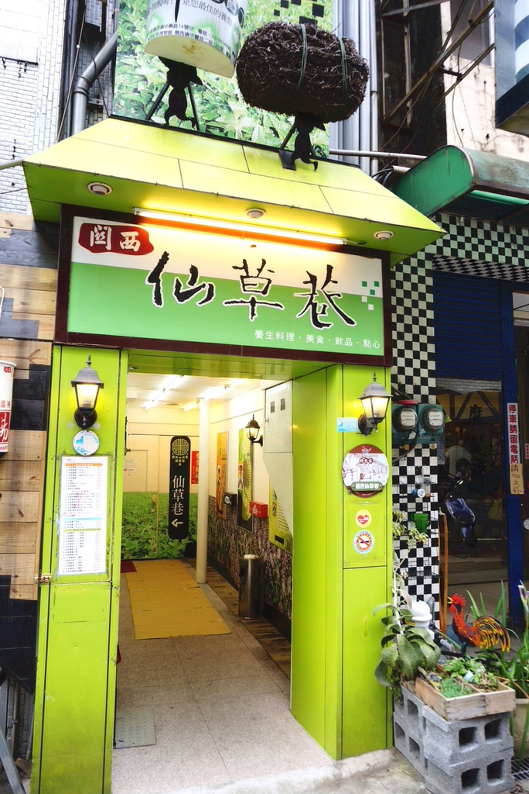

關西推薦景點&美食
首頁
仙草巷
東安橋頭牛肉麵
東安古橋
ㄤ咕麵
更多資訊
仙草的故鄉-新竹縣關西鎮聞名全台，其品質之高與名氣之響，使得仙草為關西鎮一大特色。創辦人對家鄉的名物「仙草」有著一股特別的感情，小時候務農的父母總是會把長在田埂邊的仙草刨回家，曬乾後儲藏，等到來年夏天煮成消暑解熱的仙草茶帶著下田，做為農事忙碌間，全家休息時解渴清熱飲料。
為了推動家鄉特色產業「仙草」，憶起童年對仙草充滿感情的他，成立了「關西仙草巷」，推廣仙草相關產品：仙草膠質丁、仙草膠磚、仙草飯糰等，並採健康，無勾芡、無澱粉的方式製作仙草產品。
仙草被視為消暑解熱的良方，是夏天裡大人、小孩都愛吃的清涼飲品，甚至被歸納為健康養生的食材，研發出冷熱各種不同吃法，甚至入菜成為仙草料理，為了推廣仙草文化，2012年更成立了「仙草博物館生態農場」希望更多民眾到訪關西，體驗不同的仙草文化之旅。
